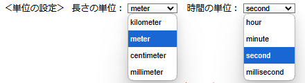
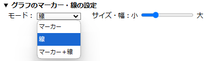
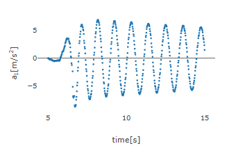
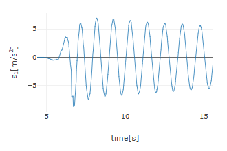
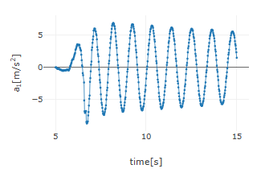
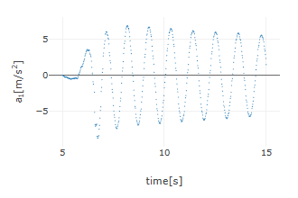
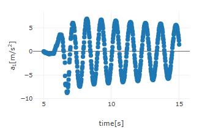
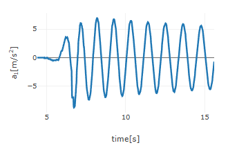

【操作方法】
■ 各種設定
- 単位の設定
本アプリを開いて，最初にCSVファイルを読み込むと，データテーブルが表示され，その下に＜単位の設定＞の行が現れる．単位の設定では，長さの単位（デフォルト：meter（メートル））と時間の単位（デフォルト：second（秒））を設定できる．長さの単位は，mm（ミリメートル），cm（センチメートル），m（メートル），km（キロメートル）から，時間の単位は，ms（ミリ秒），s（秒），min（分），h（時間）から選択する．ここで設定した単位を基に，グラフのラベルで表示される位置・速度・加速度の単位が決まる．デフォルトでは，それぞれ，m，m/s，m/s2 となる．
 - グラフのマーカー・線の設定
本アプリを開いて，最初にCSVファイルを読み込むと，＜単位の設定＞の下に「▶ グラフのマーカー・線の設定」の行が表示されるので，その行をクリックすると，モードとサイズ・幅の設定エリアが現れる（もう一度クリックすると閉じる）．
モードでは，「マーカー」，「線」，「マーカー＋線」から選択し，それぞれグラフを表示すると下図のようになる（「マーカー」，「線」，「マーカー＋線」の順）．
  サイズ・幅の設定スライダーでは，マーカーのサイズや線幅を設定でき，マーカーについて，スライダーの左端（最も小さい）に設定した場合と右端（最も大きい）に設定した場合の図を下に示す．
 同様に，線幅についても，サイズ・幅の設定スライダーの左端の（最も小さい）場合と右端の（最も大きい）場合の図を下に示す．
